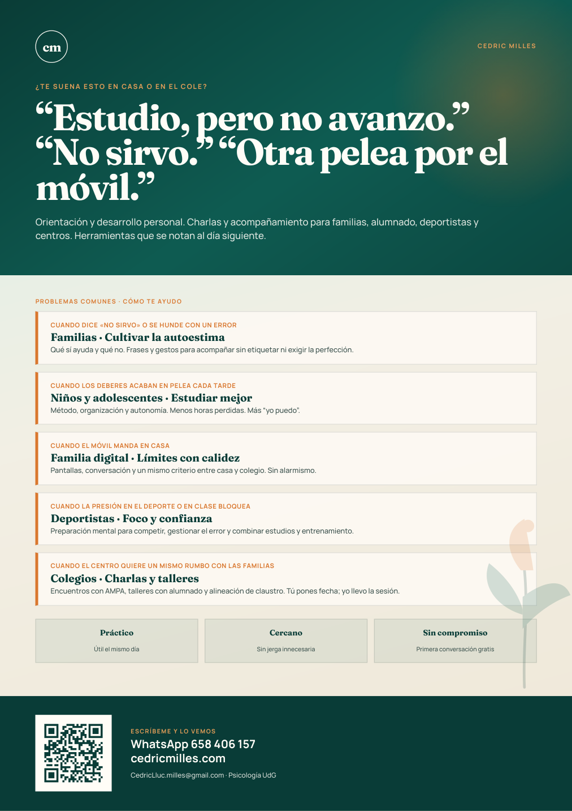
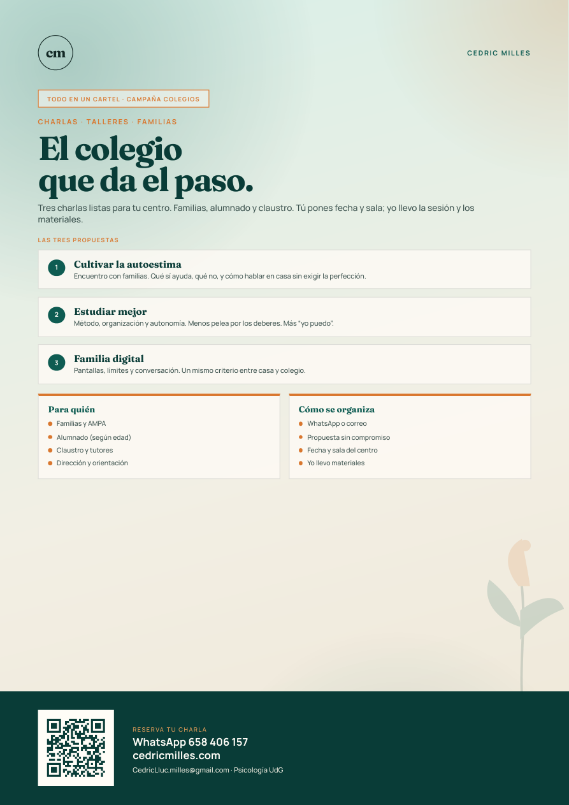
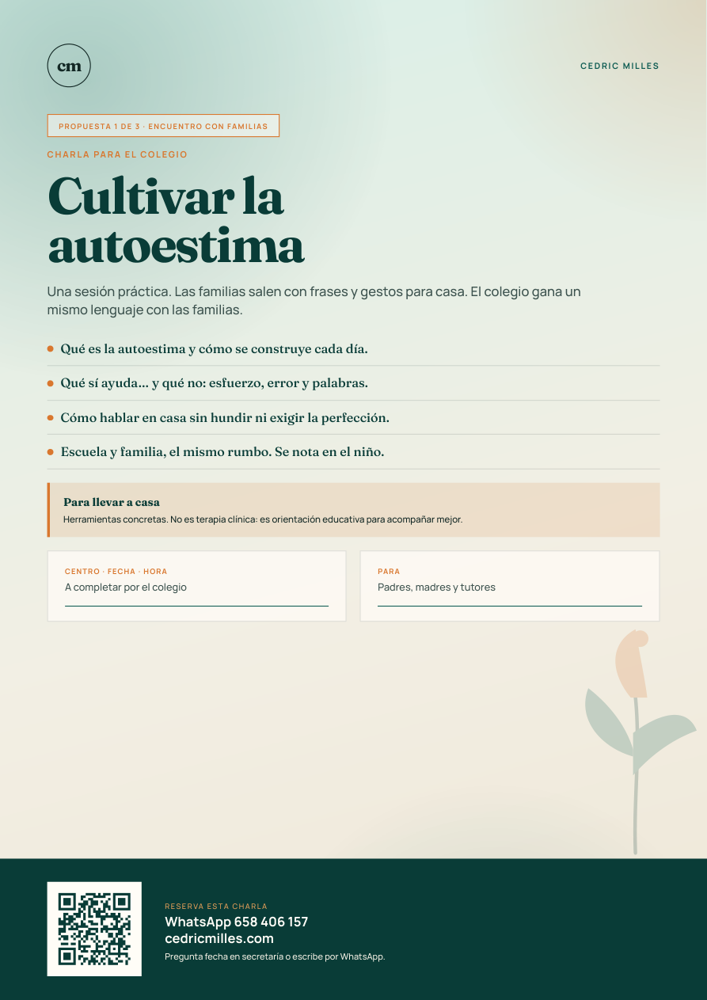
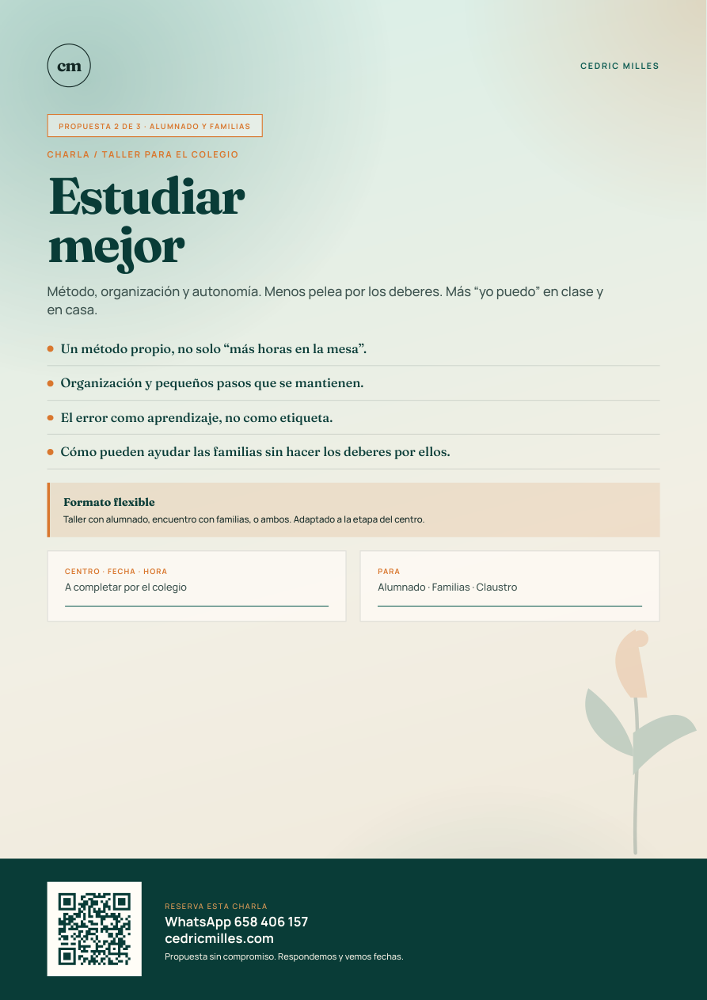
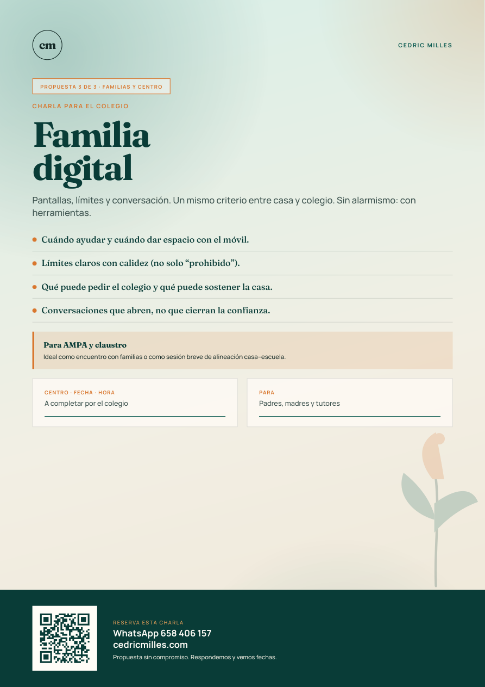
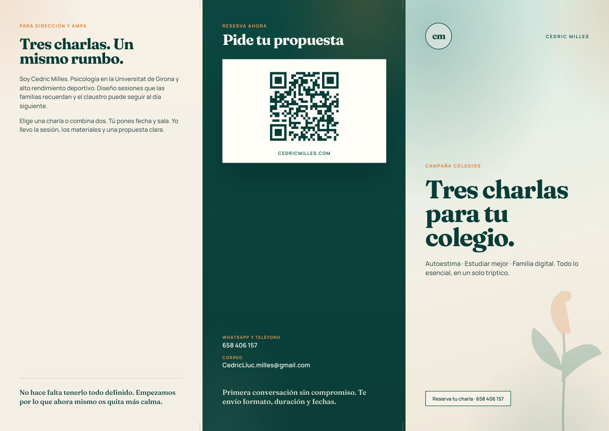
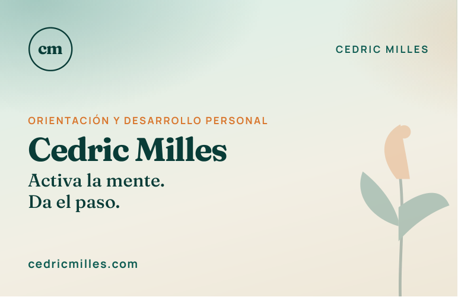
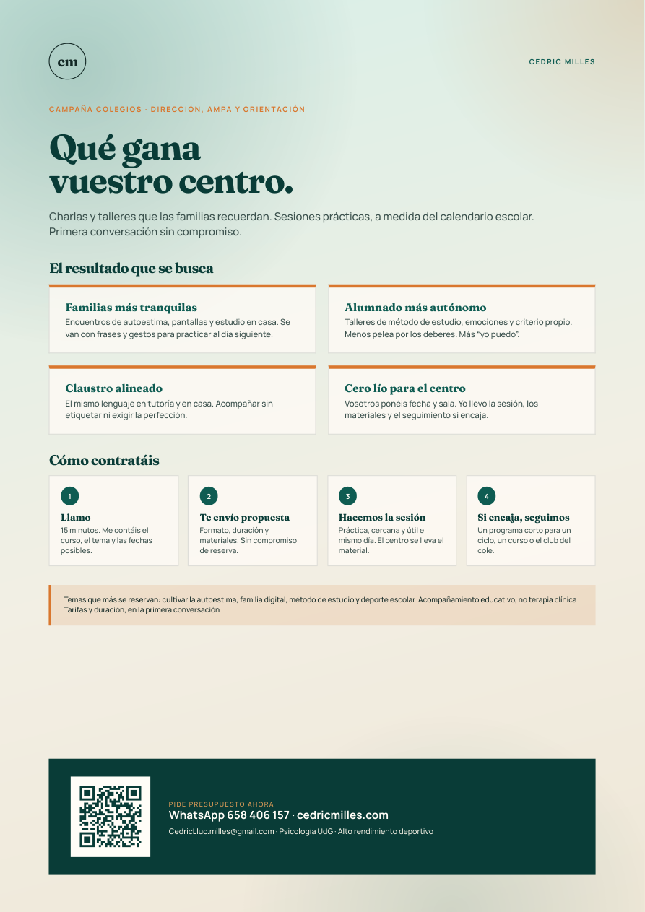

Cartel A4 · Estética actual
Quién eres + cada servicio con su problema común y cómo ayudas. Diseño más rompedor para el tablón.
Descargar cartel A4Cedric Milles · Orientación y desarrollo personal
Cartel A4 potente con los problemas que resuelves y tus servicios. Tres carteles por charla. Tríptico de propuestas. Misma paleta. Mismo QR.

Quién eres + cada servicio con su problema común y cómo ayudas. Diseño más rompedor para el tablón.
Descargar cartel A4
Versión con las tres propuestas numeradas (autoestima, estudio, pantallas).
Descargar A4 completo
Encuentro con familias. El colegio completa fecha y hora.
Descargar cartel
Método, organización y autonomía. Alumnado y/o familias.
Descargar cartel
Pantallas, límites y conversación. Casa y colegio alineados.
Descargar cartel
Una cara por propuesta: autoestima, estudiar mejor y familia digital. Para dejar en dirección o secretaría.
Descargar tríptico
85 × 55 mm. Para dar en mano a dirección, tutores y familias.
Descargar tarjeta
Hoja para jefatura / AMPA con el proceso de contratación.
Descargar propuesta